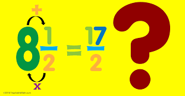
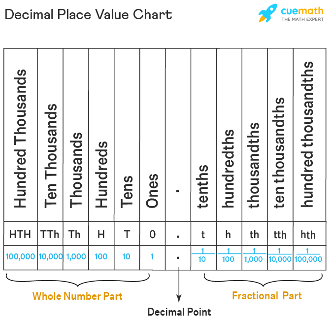

Week 1 | Fractions
Part 1: Understanding Fractions
A way to represent parts of a whole.
Fractions consist of two parts: a numerator (top number) and a denominator (bottom number).
The numerator represents the number of parts we have, and the denominator represents the total number of equal parts.
Types of Fractions
The three main types of fractions: proper fractions, improper fractions, and mixed numbers.
Proper fractions: Numerator is smaller than the denominator (e.g., 3/5).
Improper fractions: Numerator is equal to or greater than the denominator (e.g., 7/4).
Mixed numbers: A whole number combined with a proper fraction (e.g., 2 1/3).
Equivalent fractions represent the same value but are written differently.
You can find equivalent fractions by multiplying or dividing both the numerator and denominator by the same number.
Discuss the concept of comparing fractions.
You can use visual aids (fraction strips, circles, or number lines) to compare fractions with the same denominator or the same numerator.
Converting Between Mixed Numbers and Improper Fractions
I will show you how to convert mixed numbers to improper fractions and vice versa.
I will explain the process step-by-step, emphasizing the role of the numerator and denominator.

Part 2: Operations with Fractions
Adding and Subtracting Fractions with the Same Denominator
When adding or subtracting fractions with the same denominator, we add or subtract the numerators while keeping the denominator the same.
I will provide several examples and guide you through the process.
Adding and Subtracting Fractions with Different Denominators
I will introduce the concept of finding a common denominator.
I will demonstrate how to find the least common denominator (LCD) and use it to add or subtract fractions with different denominators.
I will guide you through several practice problems.
I will explain that when multiplying fractions, we multiply the numerators together and the denominators together.
I will emphasize the importance of simplifying the resulting fraction, if possible.
I will porovide examples and give students an opportunity to practice multiplying fractions.
I will teach the process of dividing fractions by multiplying the first fraction by the reciprocal (flipped version) of the second fraction.
I will reinforce the need to simplify the resulting fraction.
I will provide examples and allow you to practice dividing fractions.
Fractions Problem Set
Week 2
Decimals
This lesson is designed for students who are new to decimals or need a refresher on the topic. The lesson will
cover the basics of decimals,
their relationship to fractions, operations with decimals, and real-life applications.
Let's start with a warm-up activity: You'll convert simple fractions into decimals.
For example, convert 1/2, 3/4, and 2/5 into decimals.
Let's review the answers as a class.
Decimals are a way of representing parts of a whole using place value and the base-ten system.
For example, 0.5 represents half whole, 0.75 represents three-quarters of a whole, etc.
Decimal place value: Let's discuss the concept of place value in decimals, using a place value chart to show the
positions of tenths, hundredths, thousandths, and so on.
Representing decimals: Demonstrate how to read and say decimals correctly. For example, 0.25 is read as
"twenty-five hundredths," and 0.75 is read as "seventy-five hundredths."
Practice: I will provide a set of decimal numbers for you to read aloud. Include numbers with different decimal
places, such as 0.3, 0.47, 0.125, etc.
You'll read the numbers individually and as a group.

Relating Decimals and Fractions
A recap on fractions - recall that decimals and fractions are related.
For example, 0.5 is equivalent to 1/2, 0.75 is equivalent to 3/4, etc.
Converting decimals to fractions:
Here's how to convert decimals to fractions step-by-step.
I'll use examples like 0.4, 0.25, and 0.6.
Simplify the fractions when possible.
Converting fractions to decimals:
Here's how to convert fractions to decimals, such as 3/5, 7/10, and 5/8.
Practice: I'll provide a mix of decimal and fraction conversion problems for you to solve on your own or in
pairs.
Please compare answers with your peers.
Operations with Decimals
Addition and Subtraction:
Recognize the importance of aligning the decimal points when performing these operations.
Multiplication:
Here's how to multiply decimals.
Observer the placement of the decimal point in the product and how the number of decimal places works.
Division:
Let's discuss division with decimals.
We'll use examples like dividing money or measuring ingredients to make it relatable.
Practice: I will provide a worksheet with various problems involving addition, subtraction, multiplication, and
division
of decimals.
Please work through these problems.
Real-Life Applications of Decimals
Practical examples: As you know, decimals are very often used in real-life situations, such as money,
measurements, and statistics.
Money: Decimals are used in money transactions, like making change, calculating discounts, and budgeting.
Measurements: Decimals are used in measurements, such as length, weight, and volume.
Statistics: Decimals are used in representing percentages and decimal numbers in statistical data.
Decimals Problem Set
Week 3
- Manuel has $70. Maria has $20. Manuel gives Maria x amount of dollars.
- The amount of money Manuel will have after he gives Maria money:
- The amount of money Maria will have after Manuel gives her money:
- Double the amount that Maria will receive:
Midterm Exam
Week 4
Mixed Numbers
Week 5
Fractions and Decimals - Comparing and Converting
Week 6
Review for Final Exam
Final Exam